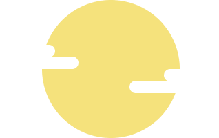

公式サイトを公開しました
『つく×よむ』の公式サイトを公開しました。

短歌の「つくる」と「よむ」を広げる
オンラインの歌会アプリです。
『つく×よむ』は、誰でも参加できるオンラインの歌会アプリです。日替わりで発表されるお題から好きなものを選んで短歌を投稿しましょう。投稿された短歌の中から一番ハートを集めた短歌が首席として表彰されます。投票中は作者名が伏せられているので、短歌そのものの腕前を試すことができます。
「つくる」と「よむ」を通じて、短歌の世界をより楽しめるアプリを目指しています。
対応OS: iOS